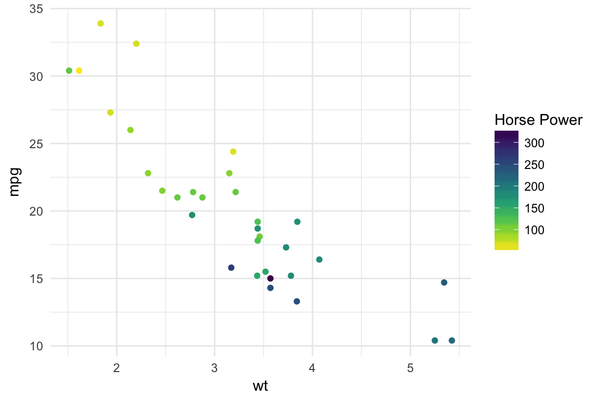

Color Palettes from Node.js Colormap module.


This is an R package that allows you to generate colors from color palettes defined in Node.js’s colormap module. In total it provides 44 distinct palettes made from sequential and/or diverging colors. In addition to the pre defined palettes you can also specify your own set of colors.
There are also scale functions that can be used with ggplot2.
Changelog
- 2016-11-15 0.1.4 With Viridis as default theme.
- 2016-10-21 0.1.3 Now on CRAN.
- 2016-09-06 Ability to generate a custom palette.
- 2016-08-30 Input Validation and ggplot2 scales.
- 2016-08-29 First Release.
Credits
- The colormap Node.js module which does all the heavylifting.
- The V8 package which allows R code to call Javascript code.
- Bob Rudis’s zoneparser package which I used as a skeleton for this pacakge.
- Simon Garnier’s viridis package for ggplot2 scale functions.
Installation
if(!require("V8")) install.packages("V8")
if(!require("V8")) install.packages("ggplot2")
# CRAN Version
install.packages('colormap')
# OR if you want to install dev. version from Github
if(!require("devtools")) install.packages("devtools")
devtools::install_github("bhaskarvk/colormap")Usage
The main function is colormap which takes 5 optional arguments
- colormap: A string representing one of the 44 built-in colormaps.You can use the
colormapslist to specify a value. e.g.colormaps$densityOR A vector of colors in hex e.g. c(‘#000000’,‘#777777’,‘#FFFFFF’) OR A list of list e.g. list(list(index=0,rgb=c(255,255,255)),list(index=1,rgb=c(255,0,0))) - nshades: Number of colors to generate.
- format: one of ‘hex’, ‘rgb’, ‘rgbaString’
- alpha: Between 0 & 1 to specify the transparency.
- reverse: Boolean. Whether to reverse the order of the colors returned or not.
Examples
library(colormap)
# Defaults to 72 colors from the 'viridis' palette.
scales::show_col(colormap(), labels = F)
# Specify a different palette from a list of pre-defined palette.
scales::show_col(colormap(colormap=colormaps$temperature, nshades=20))
# Specify opacity value.
scales::show_col(colormap(colormap=colormaps$temperature, nshades=20, alpha=0.7))
# Specify colormap as vector of colors.
scales::show_col(colormap(colormap=c('#FFFFFF','#FF0000'),nshades = 12))
# Specify colormap as list of lists.
scales::show_col(colormap(colormap=list(list(index=0,rgb=c(0,255,0)),
list(index=1,rgb=c(255,0,255))),
nshades=12, alpha=0.65))
You can also get the colors in a ‘rgb’ matrix and a rgba string vector format
colormap(format='rgb',nshades=5) # As rgb
#> [,1] [,2] [,3] [,4]
#> [1,] 68 1 84 1
#> [2,] 59 81 139 1
#> [3,] 33 144 141 1
#> [4,] 92 200 99 1
#> [5,] 253 231 37 1
colormap(format='rgbaString',nshades=10) # As rgba string
#> [1] "rgba(68,1,84,1)" "rgba(71,39,117,1)" "rgba(62,72,135,1)"
#> [4] "rgba(49,102,141,1)" "rgba(38,130,141,1)" "rgba(36,157,136,1)"
#> [7] "rgba(55,181,120,1)" "rgba(109,204,88,1)" "rgba(176,221,49,1)"
#> [10] "rgba(253,231,37,1)"You also get scale_fill_colormap and scale_color_colormap functions for using these palettes in ggplot2 plots. Check ?colormap::scale_fill_colormap for details.
ensureCranPkg <- function(pkg) {
if(!suppressWarnings(requireNamespace(pkg, quietly = TRUE))) {
install.packages(pkg)
}
}
ensureCranPkg('ggplot2')
library(ggplot2)
# Continuous color scale
ggplot(mtcars,aes(x=wt,y=mpg)) + geom_point(aes(color=hp)) +
theme_minimal() +
scale_color_colormap('Horse Power',
discrete = F,colormap = colormaps$viridis, reverse = T)
ggplot(mtcars,aes(x=wt,y=mpg)) + geom_point(aes(color=as.factor(cyl))) +
theme_minimal() +
scale_color_colormap('Cylinder',
discrete = T,colormap = colormaps$warm, reverse = T)
Here are two choroplethes using scale_fill_colormap.
ensureCranPkg('maptools')
ensureCranPkg('scales')
ensureCranPkg('ggplot2')
ensureCranPkg('ggthemes')
ensureCranPkg('devtools')
if(!suppressWarnings(requireNamespace('albersusa', quietly = TRUE))) {
devtools::install_github('hrbrmstr/albersusa')
}
library(maptools)
library(scales)
library(ggplot2)
library(albersusa)
library(ggthemes)
library(colormap)
us <- usa_composite()
us_map <- fortify(us, region="fips_state")
gg_usa <- ggplot(us@data, aes(map_id=fips_state,fill=pop_2014)) +
geom_map(map=us_map, color='#ffffff', size=0.1) +
expand_limits(x=us_map$long,y=us_map$lat) +
theme_map() +
theme(legend.position="right")
gg_usa +
coord_map("albers", lat0=30, lat1=40) +
scale_fill_colormap("State Population\n(2014 Estimates)", labels=comma,
colormap = colormaps$copper, reverse = T, discrete = F)
counties <- counties_composite()
counties_map <- fortify(counties, region="fips")
gg_counties <- ggplot(counties@data,
aes(map_id=fips,fill=census_area)) +
geom_map(map=counties_map, color='#ffffff', size=0.1) +
expand_limits(x=counties_map$long,y=counties_map$lat) +
theme_map() +
theme(legend.position="right")
gg_counties +
coord_map("albers", lat0=30, lat1=40) +
scale_fill_colormap("County Area", labels=comma, trans = 'log10',
colormap = colormaps$freesurface_red, reverse = T, discrete = F) +
theme(#panel.border = element_rect(colour = "black", fill=NA, size=1),
legend.position = 'bottom', legend.direction = "horizontal")
Here is a plot showing all 44 pre-defined color palettes and the colors they generate.
ensureCranPkg('purrr')
par(mfrow=c(44,1))
par(mar=rep(0.25,4))
purrr::walk(colormaps, function(x) {
barplot(rep(1,72), yaxt="n", space=c(0,0),border=NA,
col=colormap(colormap=x), main = sprintf("\n\n%s",x))
})